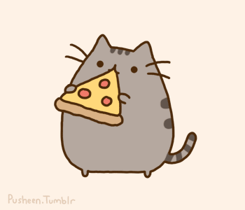

<!-- Copyright (c) 2022 8th Wall, Inc. -->
<!-- body.html is optional; elements will be added to your html body after app.js is loaded. -->

<a-scene
  xrextras-tap-recenter
  landing-page
  xrextras-loading
  xrextras-runtime-error
  xrextras-gesture-detector
  xrweb="allowedDevices: any">
  <a-assets>
    
  </a-assets>

  <a-entity
    light="
      type: directional; 
      castShadow: true; 
      color: white; 
      intensity: 0.5"
    position="5 10 7">
  </a-entity>

  <a-camera position="0 2 2"></a-camera>

  <a-box
    xrextras-one-finger-rotate
    position="0 0.5 0"
    material="shader: gif; src: #nyan; color:green; opacity: .8"
    shadow>
  </a-box>

  <a-plane
    height="2000"
    width="2000"
    rotation="-90 0 0"
    material="shader: shadow; opacity: 0.67"
    shadow>
  </a-plane>
</a-scene>
